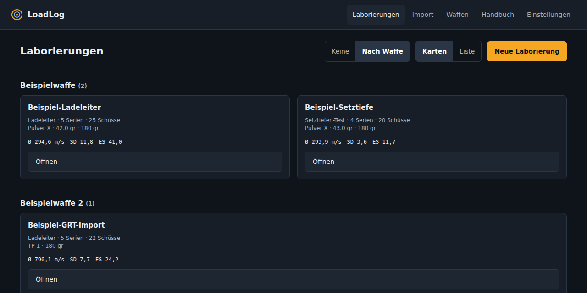
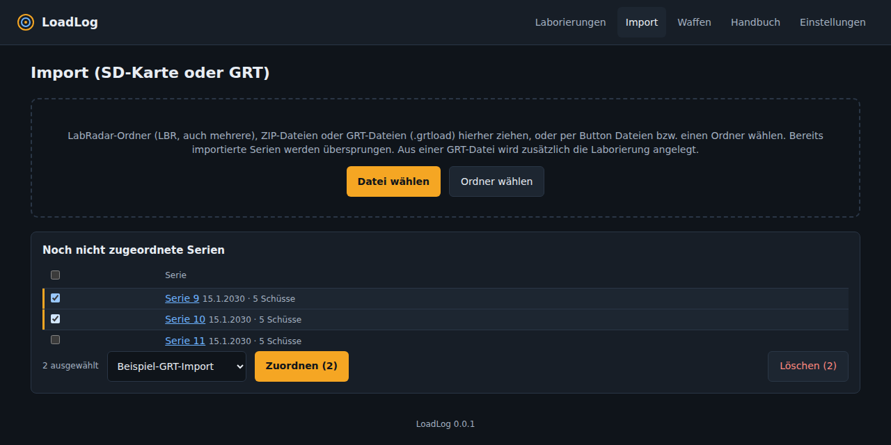
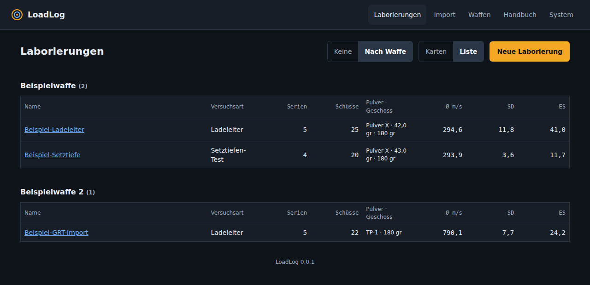
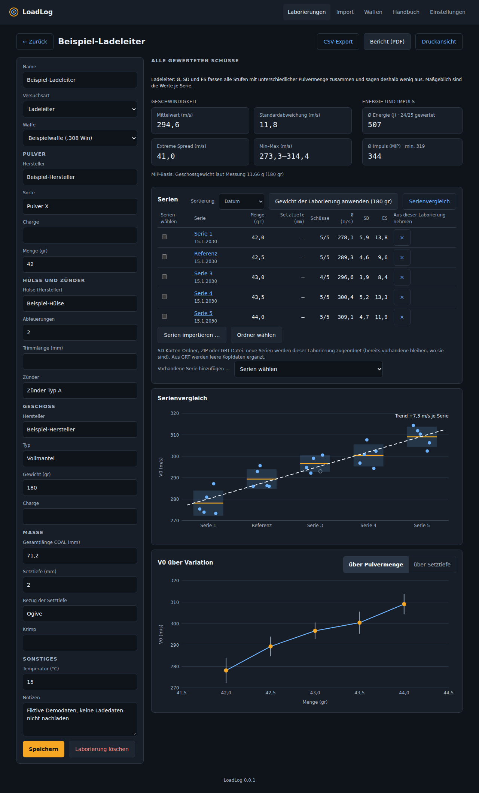
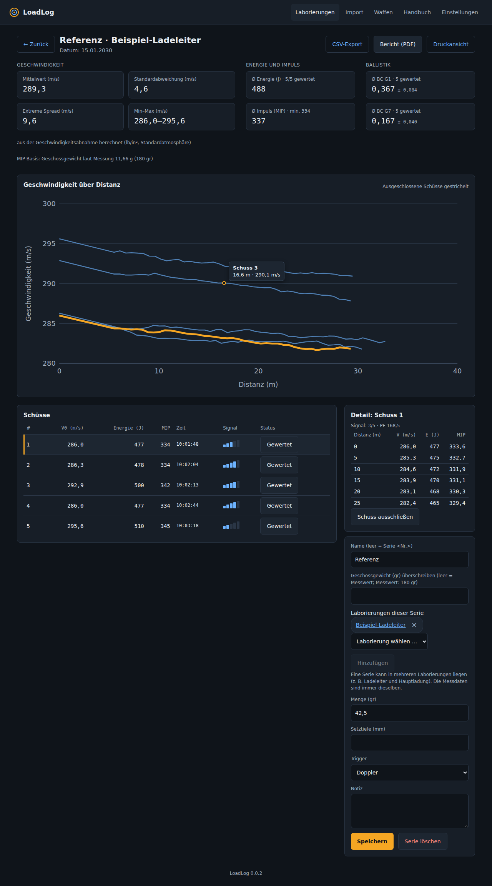
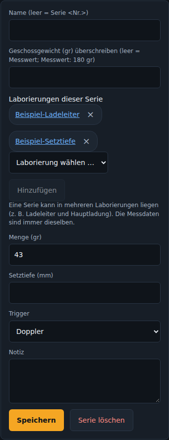
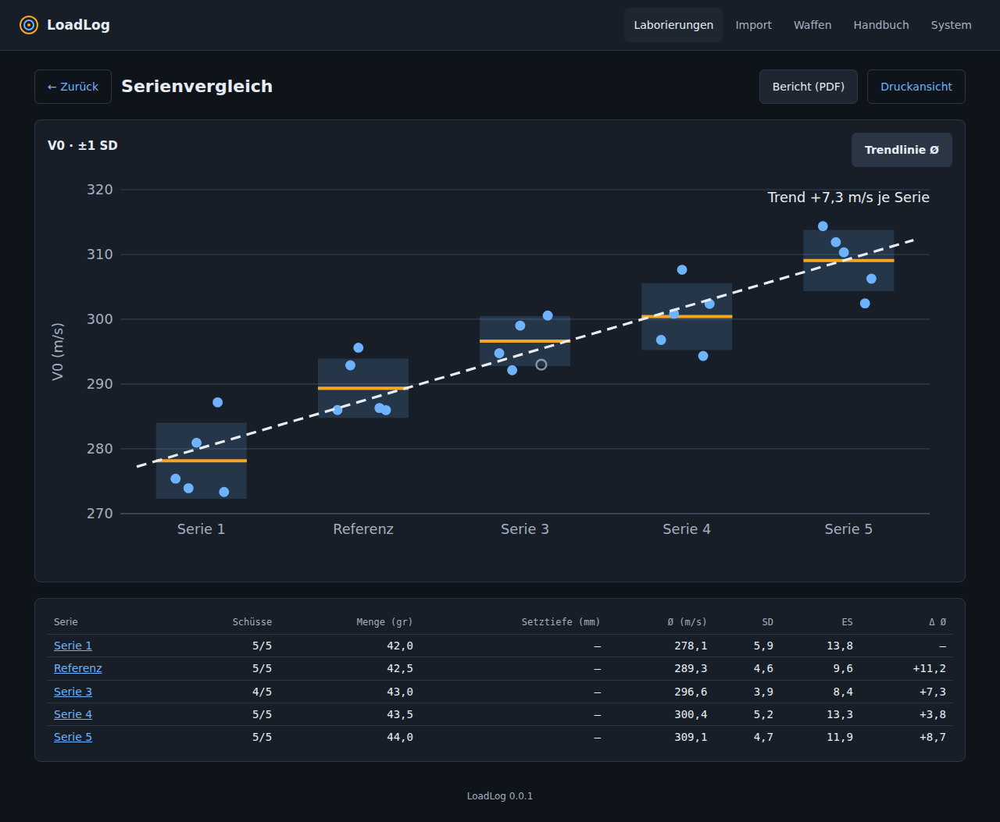
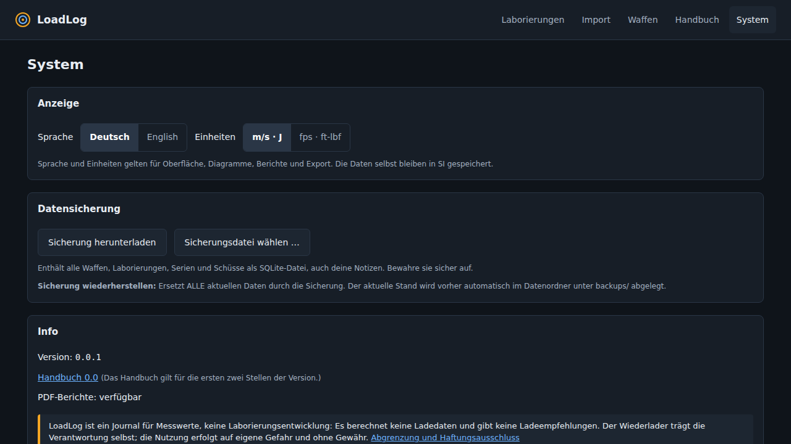

LoadLog Handbuch
Dieses Handbuch gilt für LoadLog 0.0.x.
Einführung
LoadLog ist ein Journal für deine Laborierungen und die dazugehörigen Messungen des LabRadar. Du legst Laborierungen mit ihren Stammdaten ab, ordnest ihnen die importierten Serien zu, schließt Ausreißer aus und siehst Statistik, Impuls, Ballistischen Koeffizienten, Geschwindigkeitsverläufe, Vergleiche und Trends. Berichte lassen sich als PDF speichern, Messwerte als CSV exportieren.

Abgrenzung und Haftungsausschluss
Journal, keine Laborierungsentwicklung
LoadLog legt ab und wertet aus, was du selbst geladen und gemessen hast. Es ist kein Werkzeug zur Entwicklung von Laborierungen:
- Es berechnet keine Ladedaten und gibt keine Ladeempfehlungen: keine Pulvermengen, keine Start- oder Maximalladungen, keine „beste“ Ladung, keine Druck- oder Sicherheitsberechnung.
- Es ersetzt keine Ladetabellen, Handbücher oder Vorgaben der Hersteller.
- Alle Angaben zu Pulver, Menge, Geschoss, Setztiefe usw. sind reine Eingaben von dir. LoadLog prüft sie weder auf Plausibilität noch auf Sicherheit.
- Auswertungen (Mittelwert, Standardabweichung, Energie, Impuls, ballistischer Koeffizient u. a.) sind rechnerische Näherungen aus den Messwerten.
Haftungsausschluss
Du als Wiederlader bist allein verantwortlich: für deine Ladedaten (nur aus verlässlichen, aktuellen Quellen der Hersteller), für deine Sorgfalt, für den sicheren Umgang mit Waffen und Munition und für die Einhaltung der geltenden Gesetze und Vorschriften.
LoadLog wird unentgeltlich, „wie besehen“ und ohne jede Gewährleistung bereitgestellt (MIT-Lizenz). Die Haftung für Vorsatz und grobe Fahrlässigkeit, für die Verletzung von Leben, Körper oder Gesundheit und nach zwingenden gesetzlichen Vorschriften (z. B. dem Produkthaftungsgesetz) bleibt unberührt. Im Übrigen haften die Autorinnen, Autoren und Mitwirkenden, soweit gesetzlich zulässig, nicht für Schäden jeder Art, insbesondere Sach- und Folgeschäden, die aus der Nutzung oder Nichtnutzung der Software, aus Fehlern, fehlerhaften Messwerten, Berechnungen oder Darstellungen oder aus Datenverlust entstehen. Verlasse dich bei sicherheitsrelevanten Entscheidungen und bei Wettkampfwertungen nie allein auf LoadLog. Für Nutzerinnen und Nutzer, auf die deutsches Recht anwendbar ist, gilt diese Haftungsregelung anstelle des Gewährleistungs- und Haftungsausschlusses der englischsprachigen MIT-Lizenz, soweit beide voneinander abweichen. Dieser Text ist keine Rechtsberatung.
LabRadar und Gordon's Reloading Tool sind Marken bzw. Produkte ihrer jeweiligen Hersteller. LoadLog ist ein unabhängiges, inoffizielles Projekt ohne Verbindung zu ihnen.
Beispieldaten
Alle Werte in den Abbildungen, Beispielen und Demodaten (Pulver, Mengen, Geschossgewichte, Geschwindigkeiten, Setztiefen) sind frei erfunden. Es sind keine Ladedaten und keine Empfehlung. Sie dürfen nicht nachgeladen oder nachgebaut werden.
Installation
LoadLog läuft als ein einzelner Docker-Container auf einem Rechner oder Server im Heimnetz.
git clone https://github.com/TyMi/LoadLog.git loadlog
cd loadlog
docker compose up -d --buildDanach ist die App unter http://localhost:8080 erreichbar. Die Daten liegen in einem Docker-Volume (loadlog-data, eine SQLite-Datei). Standardmäßig lauscht der Container nur auf dem eigenen Rechner (127.0.0.1). Willst du von anderen Geräten im Heimnetz zugreifen, setze die Variable LOADLOG_BIND (siehe Sicherheit und Netzwerk).
| Variable | Bedeutung | Standard |
|---|---|---|
LOADLOG_PORT | Port auf dem Host | 8080 |
LOADLOG_BIND | Adresse auf dem Host | 127.0.0.1 |
LOADLOG_ALLOWED_HOSTS | Erlaubte Host-Namen, kommagetrennt (optional, Schutz vor DNS-Rebinding) | leer (alle) |
Aktualisieren: neuen Stand holen und erneut docker compose up -d --build ausführen. Deine Daten bleiben erhalten; die Datenbank wird beim Start automatisch auf das neue Schema gehoben. Mache vorher eine Sicherung. Der Build ist weitgehend reproduzierbar: Basis-Images sind per Digest festgelegt, die Python-Pakete kommen mit Hashprüfung aus der Lock-Datei (die Debian-Systempakete sind nicht auf eine Version festgelegt).
Import: SD-Karte und GRT
Öffne Import. Du kannst mehrere Quellen gleichzeitig in das Feld ziehen oder über Datei wählen und Ordner wählen auswählen:
- LabRadar-Ordner (
LBRvon der SD-Karte): direkt hineinziehen oder über Ordner wählen auswählen, auch am Mac. Du musst nichts packen; mehrere Karten gleichzeitig sind möglich. - ZIP-Dateien mit einem
LBR-Ordner. - GRT-Dateien (
.grtload, Gordon's Reloading Tool): Sie enthalten die Laborierung und die LabRadar-Messungen. LoadLog legt daraus die Laborierung an (Name, Pulver, Geschoss, Gesamtlänge, Setztiefe u. a.) und ordnet die Serien zu. Das ist nützlich, wenn die SD-Karte schon überschrieben ist.

Zuordnen, rückgängig machen, löschen
Neue Serien aus Ordnern und ZIPs erscheinen unter Noch nicht zugeordnete Serien. Hake eine oder mehrere an, wähle eine Laborierung und klicke Zuordnen. Die Meldung bietet Rückgängig, falls du dich vertippt hast. Löschen entfernt die angehakten Serien nach Rückfrage; die Messdaten lassen sich jederzeit von der SD-Karte oder aus der GRT-Datei neu importieren.
Import direkt in einer Laborierung
Auch in jeder Laborierung gibt es einen Import. Neue Serien werden sofort dieser Laborierung zugeordnet. Bei einer GRT-Datei ergänzt LoadLog nur leere Stammdatenfelder, vorhandene Angaben werden nie überschrieben.
Duplikate
- Dieselbe Quelle wird erkannt und übersprungen. Du kannst eine SD-Karte also jederzeit erneut importieren.
- LoadLog erkennt auch dieselbe Serie aus verschiedenen Quellen (SD-Karte und GRT-Datei): gleicher erster Schuss (±2 Sekunden), gleiche Schusszahl und gleiche V0.
- Kommt die SD-Karte nach der GRT-Datei, werden die gerundeten GRT-Werte durch die genaueren Karten-Daten ersetzt (mit Signalstärke). Laborierung, Name, Notizen, Gewicht und ausgeschlossene Schüsse bleiben erhalten.
- Kommt die GRT-Datei nach der SD-Karte, wird sie übersprungen. Beides steht als Hinweis im Importergebnis.
- Gelesen werden die
.lbr-Dateien (volle Genauigkeit, Signalstärke) und die Track-Dateien (Geschwindigkeit über Distanz). Fehlt eine.lbr, nutzt LoadLog die gerundeten Werte aus derReport.csv. - Die am Gerät eingestellten Messdistanzen (Dx1 bis Dx5) werden automatisch erkannt.
- GRT-Dateien enthalten V0 und die Geschwindigkeiten auf 1 m/s gerundet, dazu den Track. Signalstärke und Gerätenummer fehlen. Defekte oder unplausible Schüsse werden verworfen und als Hinweis gemeldet.
Laborierungen
Eine Laborierung fasst zusammen, was du geladen hast. Wähle Neue Laborierung und fülle aus, was du ablegen willst; alle Felder außer dem Namen sind optional.
Übersicht
Oben rechts wählst du die Darstellung: Karten oder Liste, und ob die Laborierungen nach Waffe gruppiert werden. Die Auswahl wird im Browser gemerkt.


| Bereich | Felder |
|---|---|
| Allgemein | Name, Versuchsart (Einzelmessung, Ladeleiter, Setztiefen-Test), Waffe |
| Pulver | Hersteller, Sorte, Charge, Menge in grain |
| Hülse und Zünder | Hülse (Hersteller), Anzahl Abfeuerungen, Trimmlänge, Zünder |
| Geschoss | Hersteller, Typ, Gewicht in grain, Charge |
| Maße | Gesamtlänge (COAL), Setztiefe in mm, Bezug der Setztiefe (z. B. Ogive), Krimp |
| Sonstiges | Temperatur, Notizen |
Waffen verwaltest du unter Waffen einmal und wählst sie dann in jeder Laborierung aus. Zahlen darfst du mit Komma oder Punkt eingeben.
Serien einer Laborierung
- Sortieren kannst du die Serien nach Datum, Pulvermenge oder Name.
- Hinzufügen: Mit Vorhandene Serie hinzufügen legst du jede vorhandene Serie in diese Laborierung, auch eine, die schon in einer anderen liegt (Hinweis „auch in …“).
- Entfernen: Das × in der Zeile nimmt die Serie nur aus dieser Laborierung. Die Serie selbst bleibt erhalten.
- Löschen einer Laborierung löscht keine Serien; sie sind danach, falls sie in keiner anderen liegen, wieder nicht zugeordnet.
- Gewicht der Laborierung anwenden: Setzt das Gewicht der Laborierung bei allen ihren Serien für Impuls und Energie (siehe Serien und Schüsse). Überschreibung entfernen macht das rückgängig.
Serien und Schüsse
Öffne eine Serie, um alle Schüsse zu sehen. Das Diagramm überlagert die Geschwindigkeitsverläufe aller Schüsse (Geschwindigkeit über Distanz). Das Datum der Schüsse steht einmal im Kopf, in der Schussliste nur die Uhrzeit.

Diagramm und Auswahl
- Mouse-over: Fährst du über das Diagramm, zeigt eine Anzeige den nächstgelegenen Messpunkt mit Schuss, Distanz und Geschwindigkeit.
- Schuss wählen: Klicke auf eine Linie im Diagramm oder auf eine beliebige Stelle der Zeile in der Schussliste (außer auf den Knopf). Der gewählte Schuss ist orange hervorgehoben.
- Ausschließen: Der Knopf Gewertet in der Zeile schließt einen Ausreißer aus. Ausgeschlossene Schüsse sind im Diagramm immer grau und gestrichelt. Statistik, BC und Impuls rechnen sofort neu, die Rohdaten bleiben unverändert.
- Signal: Die Balken (1 bis 5) zeigen die Signalstärke. Wenige Balken deuten auf eine schlechte Erfassung hin.
- Detail: Geschwindigkeit, Energie und Impuls an den eingestellten Distanzen für den gewählten Schuss.
Kennzahlen
| Gruppe | Werte |
|---|---|
| Geschwindigkeit | Mittelwert, Standardabweichung (SD, Stichprobe), Extreme Spread (ES), Min–Max, jeweils aus den gewerteten Schüssen |
| Energie und Impuls | Ø Energie und Ø Impuls (MIP) mit dem kleinsten Einzelwert (min.) |
| Ballistik | Ø BC nach G1 und G7 mit Streuung |
Impuls (MIP)
Der Mindestimpuls (MIP) folgt der Formel der Sportordnung des Deutschen Schützenbundes (DSB), Teil 2, Regel 2.21.1 (maßgeblich ist die jeweils gültige Fassung): MIP = 0,1 × Geschossgewicht in Gramm × Geschwindigkeit in m/s, ohne Einheit; LoadLog setzt dafür V0 ein. Beispiel: 180 grain sind 11,66 g, bei 300 m/s ergibt das 349,9. Angezeigt wird auf ganze Zahlen gerundet (350). Bei der Munitionsprüfung nach der Sportordnung werden bis zu drei Schüsse im Mündungsbereich (2 bis 3 m Abstand) gemessen; disqualifiziert wird, wenn keine Messung den geforderten Wert erreicht. LoadLog zeigt deshalb den Mittelwert und das kleinste Ergebnis (min.) als vorsichtige Orientierung. Bei Doppler-Trigger ist V0 nicht die Mündungsgeschwindigkeit; Impuls und Energie gelten dann nicht an der Mündung.
Die offizielle Munitionsprüfung misst die Mündungsgeschwindigkeit mit vom DSB zugelassenen Messgeräten. LoadLog ersetzt sie nicht: Die Werte sind eine eigene Vorabkontrolle und kein Nachweis gegenüber dem Schießleiter.
Das Gewicht stammt aus der Messung. Darunter steht, welches Gewicht verwendet wurde. Weicht es um mehr als 1 % vom Gewicht der Laborierung ab, erscheint eine Warnung. Das passiert, wenn am Gerät nicht auf das richtige Geschoss umgestellt wurde. Fehlt das Gewicht, ist der Impuls nicht berechenbar.
Geschossgewicht überschreiben
In der Serie kannst du das Gewicht (in grain) überschreiben. Es gilt dann für Impuls, Energie und Power Factor dieser Serie; die Messdaten bleiben unverändert, leer lassen stellt den Messwert wieder her. In der Laborierung wendest du das Gewicht der Laborierung auf alle Serien an. Neue Serien übernehmen es nicht von selbst.
Ballistischer Koeffizient (BC)
Aus der Geschwindigkeitsabnahme über die Distanz berechnet LoadLog je Schuss den BC nach G1 und G7 (ICAO-Standardatmosphäre, Einheit lb/in²) und zeigt den Mittelwert. Voraussetzung sind mindestens vier Messpunkte über mindestens 8 m. Schüsse mit zu kurzer Messstrecke und ausgeschlossene Schüsse bleiben außen vor. Der Wert ist eine Näherung unter Standardbedingungen, kein Ersatz für eine Messung unter genau definierten Bedingungen.
Name, Zuordnung, Laborierungen der Serie
Rechts gibst du der Serie einen Namen (leer = „Serie <Nr.>“), pflegst Pulvermenge, Setztiefe, Trigger-Modus und Notiz.

Im Bereich Laborierungen dieser Serie siehst du alle Laborierungen der Serie. Mit × nimmst du sie aus einer heraus, mit Hinzufügen legst du sie in eine weitere. Die Messdaten sind immer dieselben, ein Ausschluss oder eine Gewichtsänderung wirkt in allen Laborierungen.
Ladeleitern und Setztiefen
LoadLog berechnet keine Ladeleitern, es stellt die Messungen dazu dar. Lege dafür eine Laborierung mit der Versuchsart Ladeleiter oder Setztiefen-Test an, importiere die Serien und trage in jeder Serie den variierten Wert ein: bei der Ladeleiter die Pulvermenge, beim Setztiefen-Test die Setztiefe. Beim Import einer GRT-Datei ist die Pulvermenge schon eingetragen.
Die Kennzahlen der Laborierung (Ø, SD, ES) fassen alle Serien zusammen. Bei einer Ladeleiter mischen sie Stufen mit unterschiedlicher Pulvermenge und sagen deshalb wenig aus; maßgeblich sind die Werte je Serie und das Diagramm.
Sobald mindestens zwei verschiedene Werte vorhanden sind, zeigt die Laborierung ein Diagramm mit V0-Mittelwert und ±1 SD über dem variierten Wert. Mit den Schaltflächen wechselst du zwischen Pulvermenge und Setztiefe.
Vergleich und Trend
Wähle in einer Laborierung mehrere Serien aus und klicke Auswahl vergleichen, oder nutze Serienvergleich für alle. Bis zu 60 Serien sind möglich. Das Diagramm zeigt für jede Serie alle Schüsse als Punkte, den Mittelwert und das Band ±1 SD. Offene Kreise sind ausgeschlossene Schüsse. Bei vielen Serien werden die Beschriftungen ausgedünnt.

Die Trendlinie Ø ist eine lineare Regression über die Serienmittelwerte (Reihenfolge wie angezeigt). Der Wert gibt die Änderung der mittleren Geschwindigkeit je Serie an, etwa durch Erwärmung oder Verschmutzung. Mit zwei Serien ist es nur eine Verbindungslinie, aussagekräftig wird es erst mit mehr Serien. Die Spalte Δ Ø zeigt die Differenz zur vorherigen Serie. Der Zurück-Knopf führt zur gemeinsamen Laborierung der Serien.
PDF-Berichte
In der Serie, der Laborierung und im Vergleich gibt es die Schaltfläche Bericht (PDF). Der Bericht enthält die Stammdaten, Kennzahlen mit Impuls und BC, Diagramme und die Schusstabelle. Er wird im Container erzeugt, sieht also auf jedem Gerät gleich aus, und folgt der gewählten Sprache und Einheit. Druckansicht öffnet dieselbe Seite als HTML zum Drucken im Browser.
Ist die PDF-Erzeugung auf deinem Server nicht verfügbar (fehlende Systembibliotheken), blendet die App einen Hinweis ein; die Druckansicht funktioniert trotzdem.
CSV-Export
In der Serie und in der Laborierung gibt es die Schaltfläche CSV-Export. Sie liefert eine Zeile je Schuss mit Laborierung, Serie, Name, Datum (tt.mm.jjjj), Uhrzeit (hh:mm:ss), V0, Geschossgewicht, Energie, MIP, Power Factor, Signal, Status (gewertet oder ausgeschlossen) und der Geschwindigkeit an jeder Messdistanz.
- Die Datei folgt Sprache und Einheit der Anzeige. Deutsch: Semikolon als Trenner und Komma als Dezimalzeichen; Englisch: Komma und Punkt. Sie öffnet sich direkt in Excel und LibreOffice, Umlaute inklusive.
- Texte, die mit
=,+,-oder@beginnen, werden entschärft, damit Tabellenprogramme sie nicht als Formel ausführen.
System: Sprache, Einheiten, Sicherung
Unter System (oben rechts im Menü) findest du die Einstellungen und die Datensicherung.

- Anzeige: Sprache (Deutsch oder Englisch) und Einheiten (m/s · J oder fps · ft-lbf). Die Einstellung wird im Browser gemerkt. Gespeichert wird immer in SI-Einheiten, die Umrechnung geschieht nur in der Anzeige, so geht beim Umschalten nichts verloren. Berichte und Export folgen der Einstellung.
- Sicherung herunterladen: Liefert die komplette Datenbank (Waffen, Laborierungen, Serien, Schüsse, Notizen) als eine Datei.
- Sicherung wiederherstellen: Wähle eine Sicherungsdatei. Nach einer Rückfrage ersetzt sie alle aktuellen Daten. Zuvor legt LoadLog den bisherigen Stand im Datenordner unter
backups/ab, du kannst also zurück. Ältere Sicherungen werden automatisch auf das aktuelle Schema gehoben; Sicherungen aus einer neueren LoadLog-Version und fremde Dateien werden abgelehnt. - Info: Version, Link zum Handbuch und ob PDF-Berichte verfügbar sind.
Daten und Datensicherung
Alle Daten liegen in einer SQLite-Datei: /data/loadlog.sqlite3 im Volume. Am einfachsten sicherst und stellst du sie über die Seite System wieder her. Alternativ geht es auch direkt am Server (bei laufendem Container möglich):
docker compose cp loadlog:/data/loadlog.sqlite3 ./loadlog-backup.sqlite3Zurückspielen per Hand: Container stoppen, Datei zurückkopieren und neu starten:
docker compose stop
docker compose cp ./loadlog-backup.sqlite3 loadlog:/data/loadlog.sqlite3
docker compose startDas Löschen einer Laborierung löscht keine Serien. Das Löschen einer Serie entfernt sie samt Schüssen aus allen Laborierungen. Die Original-SD-Karte bleibt davon unberührt, du kannst sie jederzeit neu importieren.
Versionen
LoadLog nummeriert dreistufig: Major.Minor.Patch, zum Beispiel 0.0.1. Die Version steht in der Fußzeile und auf der Seite System. Dieses Handbuch gilt für die ersten zwei Stellen (Major.Minor); es liegt deshalb unter einer Adresse wie /manual/0.0/de/. Ältere Adressen ohne Versionsnummer (/manual/de/) leiten dorthin weiter. Ein Patch-Stand ändert das Handbuch nicht.
Sicherheit und Netzwerk
LoadLog hat keine Anmeldung. Jeder, der die Adresse erreicht, kann Daten lesen, ändern und eine Sicherung herunterladen oder einspielen. Betreibe es deshalb nur im vertrauenswürdigen Heimnetz.
- Standard ist die Bindung an
127.0.0.1. Für den Zugriff aus dem Heimnetz:LOADLOG_BIND=0.0.0.0 docker compose up -d. - Soll die App aus dem Internet erreichbar sein, stelle einen Reverse-Proxy mit Anmeldung davor (z. B. Caddy oder nginx mit Basic-Auth oder einem Single-Sign-On-Dienst) und TLS. Stelle den Container nie direkt ins Internet.
- Uploads sind auf 50 MB je Datei begrenzt (Sicherungen auf 200 MB). Die Grenze wird schon anhand der Dateigröße der Anfrage geprüft, bevor sie gelesen wird (Uploads ohne Längenangabe werden mit 411 abgelehnt); ZIPs werden nur gelesen, nie auf der Platte entpackt. Beim Wiederherstellen wird die Datei vollständig geprüft und migriert, bevor die laufenden Daten ersetzt werden.
- Schreibende Anfragen, die der Browser von einer fremden Webseite aus schickt (
Sec-Fetch-Site: cross-siteodersame-site), werden abgewiesen. Zusätzlich kannst du mitLOADLOG_ALLOWED_HOSTS(kommagetrennte Host-Namen) festlegen, unter welchen Namen die App erreichbar ist; das schützt vor DNS-Rebinding. - Die automatische API-Dokumentation ist unter
/api/docserreichbar und hat dieselbe Reichweite wie die App. Ihre Swagger-Oberfläche lädt Skripte voncdn.jsdelivr.net; die App selbst lädt nichts aus dem Internet nach.
Fehlersuche
| Problem | Lösung |
|---|---|
| Import meldet „Keine LabRadar-Serien gefunden“ | Der Ordner bzw. die ZIP muss LBR mit den Unterordnern SRnnnn enthalten. Prüfe, ob die Messungen bei eingelegter SD-Karte aufgezeichnet wurden. |
| Serie erscheint nicht erneut | Sie wurde schon importiert (Duplikaterkennung, auch zwischen SD-Karte und GRT). Der Hinweis im Importergebnis nennt die vorhandene Serie. |
| Ordner lässt sich nicht auswählen | Nutze Ordner wählen statt Datei wählen, oder ziehe den Ordner in das Feld. |
| Kein PDF-Knopf | Auf dem Server fehlen Systembibliotheken (Pango). Mit dem mitgelieferten Docker-Image ist das nicht der Fall. |
| Werte wirken verschoben | Doppler-Trigger: V0 liegt dann nicht an der Mündung. Siehe Import. |
| Impuls fehlt oder Warnung unter den Kennzahlen | Es steht kein oder ein vom Gewicht der Laborierung abweichendes Geschossgewicht in der Messung. Überschreibe das Gewicht in der Serie oder wende das der Laborierung an. |
| Kein BC angezeigt | Zu wenige Messpunkte oder eine zu kurze Messstrecke (mindestens vier Punkte über 8 m). Stelle am Gerät mehr oder weiter entfernte Distanzen ein. |
| Wiederherstellen schlägt fehl | Die Datei ist keine LoadLog-Sicherung, beschädigt oder stammt aus einer neueren Version. Die bisherigen Daten bleiben dabei unverändert. |
| Wenige Signalbalken | Ausrichtung und Abstand des Radars prüfen (Handbuch des LabRadar). Betroffene Schüsse ggf. ausschließen. |
Begriffe
| Begriff | Bedeutung |
|---|---|
| V0 | Geschwindigkeit am Start der Messung (siehe Trigger) |
| Dx1…Dx5 | Am Gerät eingestellte Messdistanzen für die Geschwindigkeiten Vx |
| SD | Standardabweichung der V0 (Stichprobe, n−1) |
| ES | Extreme Spread: größter minus kleinster V0 |
| MIP | Mindestimpuls nach der Sportordnung des Deutschen Schützenbundes (DSB): 0,1 × Geschossgewicht (g) × Geschwindigkeit (m/s), ohne Einheit |
| BC (G1, G7) | Ballistischer Koeffizient nach dem G1- bzw. G7-Widerstandsmodell, aus der Geschwindigkeitsabnahme berechnet |
| PF | Power Factor, vom Gerät bei Dx1 berechnet |
| SNR | Signal-Rausch-Verhältnis der Radarmessung im Track |
| GRT | Gordon's Reloading Tool; .grtload ist dessen Dateiformat für Laborierungen mit Messungen |
| COAL | Gesamtlänge der Patrone |
| Ladeleiter | Serien mit schrittweise veränderter Pulvermenge |
| Setztiefe | Eintauchtiefe des Geschosses in die Hülse bzw. Abstand zum Lauf, je nach gewähltem Bezug |